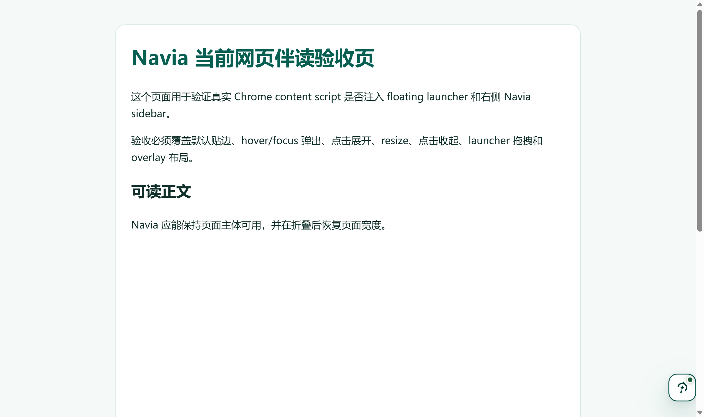
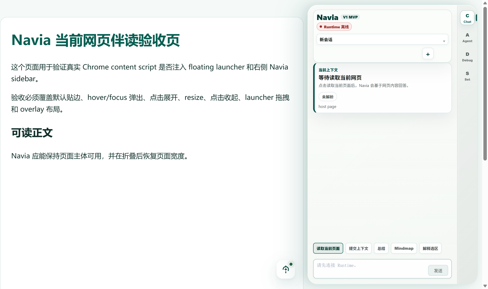
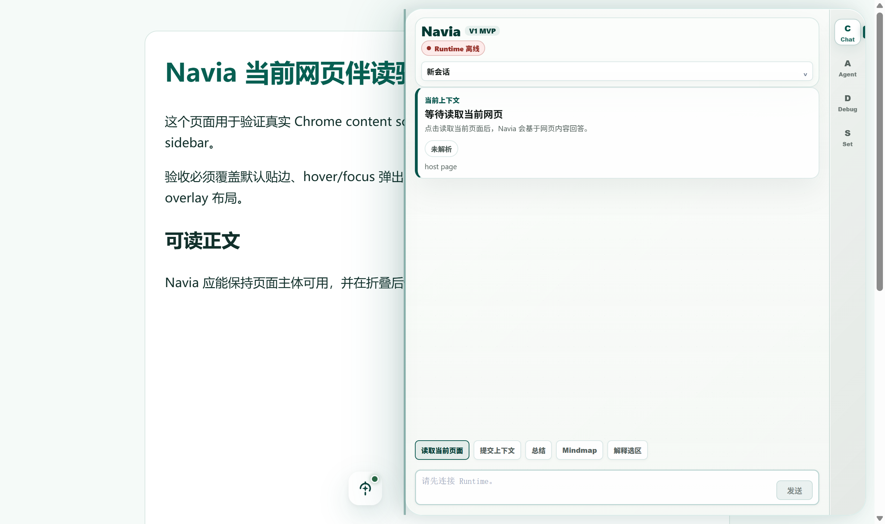
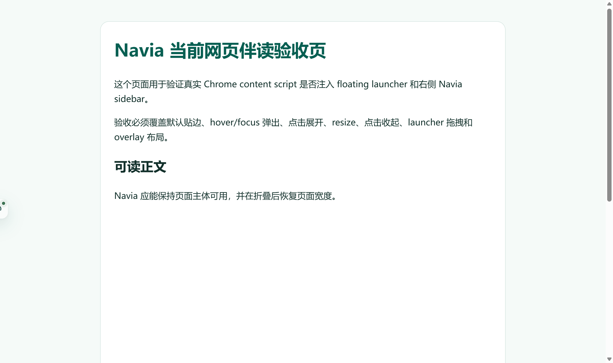
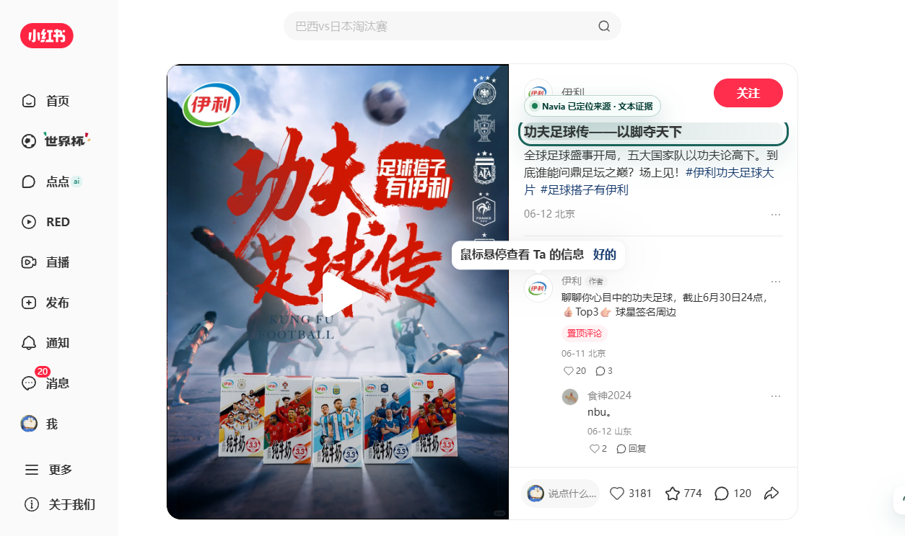
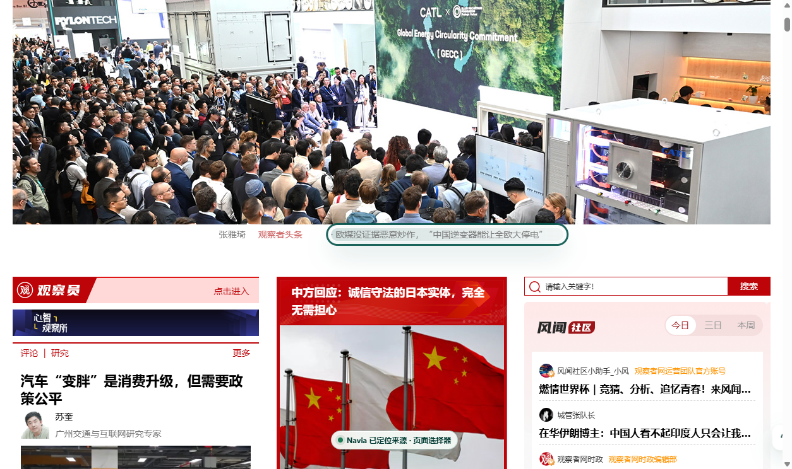
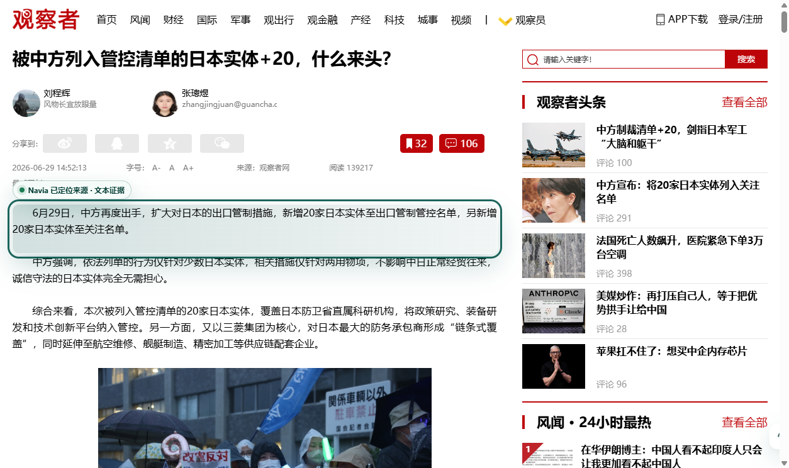
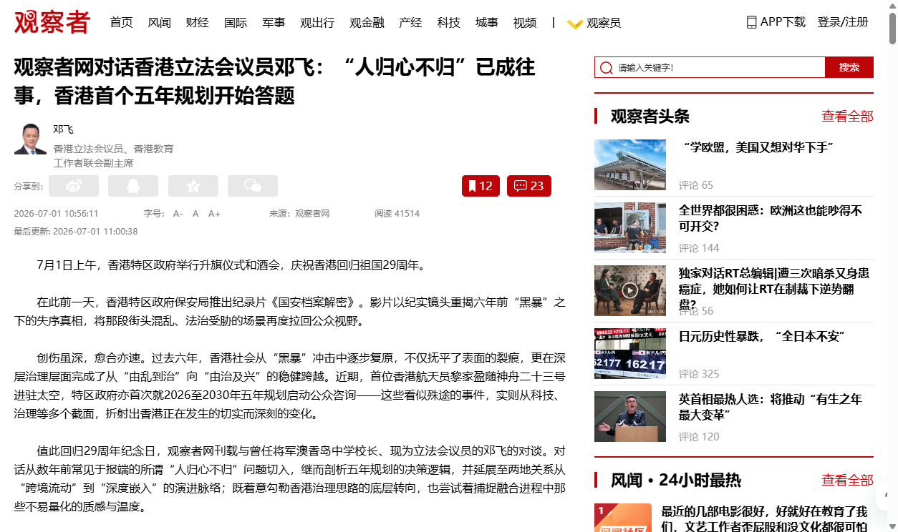
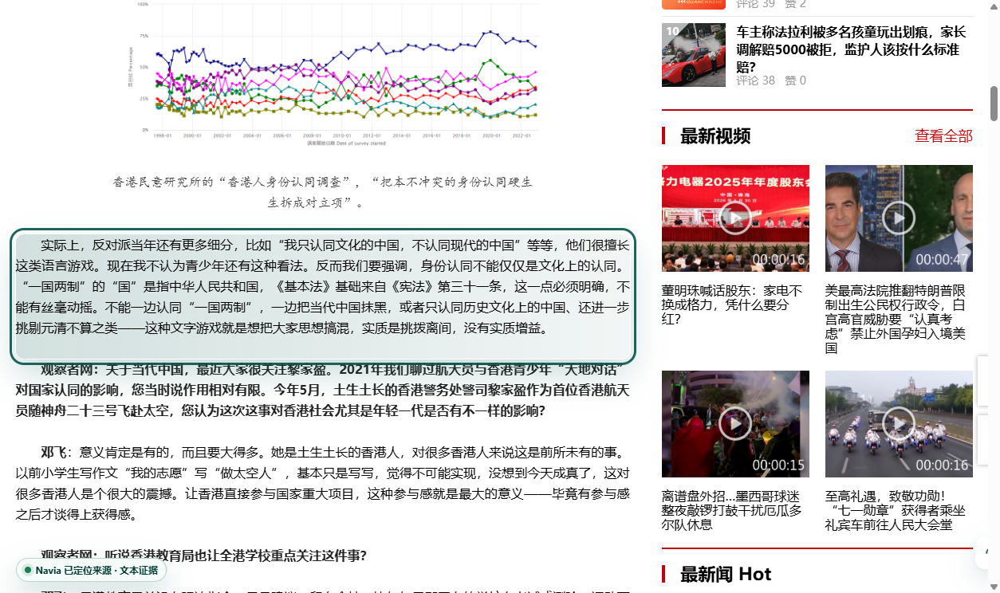

摘要
一页式审计结论
本节用于让人类先完成快速判断：本轮自动化证据证明了什么、不能证明什么、下一步需要人工确认什么。
1. 审计结论
自动化候选态通过
V1 mainline closeout candidate passed automated acceptance.
3. 必看边界
fallbackSamples = 0；fresh 样本全部 DOM highlight，fallback 仅继承 V1.3 / V1.4 上游证据。
人工产品体验核查仍为 pending。
4. 禁止声明
不得声明完整 V1 complete、最终 Monica-like UX complete、用户主 Profile 全量登录态质量、V2 Memory/RAG 或 Web Research/PPT/Deep Research。
审计者阅读顺序
本报告被设计为本轮人类审查的单一入口。审查者可以按以下顺序完成判断，不需要先跳转到其他文档。
- 先看“审计结论与人工核查状态”：确认本报告只允许自动化候选通过，不允许完整 V1 complete。
- 再看“PRD 规格覆盖矩阵”：逐条确认每项 PRD / 门禁要求都有对应证据和状态。
- 然后看“真实网页样本明细”“V1-MVP-QH scoped 样本明细”和三组截图证据：Launcher / Sidebar、真实网页路径、QH before / after，确认复杂站点、launcher、source evidence 有可见证据。
- 最后看“False-green 边界”和“人工产品体验核查清单”：确认哪些结论仍需人工判断，哪些声明被禁止。
源码版本与报告生成环境
仓库状态
远端仓库：https://github.com/zhouhouze/mercury
分支：main
被审计源码基线：be51047
Report-generation source baseline. The final commit containing generated report files may be newer than this value because evidence files are committed after generation.
main...origin/main：1 0
源码工作树：clean
报告生成
生成命令：node apps/chrome-extension/e2e/generate-v1-mainline-closeout-report.mjs
时间口径：UTC timestamp in generatedAt; repository environment is Asia/Shanghai for this session.
命令日志：本报告不内嵌原始 stdout 全量日志；审计依据为固定命令清单、上游 report.json 机器结果、截图证据和可复跑命令。若需要逐行 stdout，应在下一轮验收中用 tee 方式单独保存 logs。
证据哈希：docs/active/project/evidence/v1_mainline_closeout/evidence-manifest.json
源码工作树差异
Generated evidence changes are tracked separately from source changes so humans do not confuse report output with unreviewed implementation changes.
- 工作树干净
变更文件与证据文件索引
相对 HEAD 的变更文件
- 无相对 HEAD 的文件差异
本报告证据文件
docs/active/project/evidence/v1_mainline_closeout/acceptance-report.htmldocs/active/project/evidence/v1_mainline_closeout/report.jsondocs/active/project/evidence/v1_mainline_closeout/prd-review.mddocs/active/project/evidence/v1_mainline_closeout/false-green-audit.mddocs/active/project/evidence/v1_mainline_closeout/human-review-checklist.mddocs/active/project/evidence/v1_mainline_closeout/evidence-manifest.jsondocs/active/project/evidence/v1_mainline_closeout/screenshots/external-bilibili-detail-after.pngdocs/active/project/evidence/v1_mainline_closeout/screenshots/external-bilibili-homepage-after.pngdocs/active/project/evidence/v1_mainline_closeout/screenshots/external-guancha-detail-after.pngdocs/active/project/evidence/v1_mainline_closeout/screenshots/external-guancha-homepage-after.pngdocs/active/project/evidence/v1_mainline_closeout/screenshots/external-xiaohongshu-detail-after.pngdocs/active/project/evidence/v1_mainline_closeout/screenshots/external-xiaohongshu-homepage-after.pngdocs/active/project/evidence/v1_mainline_closeout/screenshots/launcher-collapsed-after-use.pngdocs/active/project/evidence/v1_mainline_closeout/screenshots/launcher-docked-default.pngdocs/active/project/evidence/v1_mainline_closeout/screenshots/launcher-expanded-after-click.pngdocs/active/project/evidence/v1_mainline_closeout/screenshots/launcher-launcher-drag-left.pngdocs/active/project/evidence/v1_mainline_closeout/screenshots/launcher-launcher-hover-peek.pngdocs/active/project/evidence/v1_mainline_closeout/screenshots/launcher-resized-overlay.pngdocs/active/project/evidence/v1_mainline_closeout/screenshots/qh-bilibili-detail-after.pngdocs/active/project/evidence/v1_mainline_closeout/screenshots/qh-bilibili-detail-before.pngdocs/active/project/evidence/v1_mainline_closeout/screenshots/qh-bilibili-homepage-after.pngdocs/active/project/evidence/v1_mainline_closeout/screenshots/qh-bilibili-homepage-before.pngdocs/active/project/evidence/v1_mainline_closeout/screenshots/qh-guancha-detail-after.pngdocs/active/project/evidence/v1_mainline_closeout/screenshots/qh-guancha-detail-before.pngdocs/active/project/evidence/v1_mainline_closeout/screenshots/qh-guancha-homepage-after.pngdocs/active/project/evidence/v1_mainline_closeout/screenshots/qh-guancha-homepage-before.pngdocs/active/project/evidence/v1_mainline_closeout/screenshots/qh-xiaohongshu-detail-after.pngdocs/active/project/evidence/v1_mainline_closeout/screenshots/qh-xiaohongshu-detail-before.pngdocs/active/project/evidence/v1_mainline_closeout/screenshots/qh-xiaohongshu-homepage-after.pngdocs/active/project/evidence/v1_mainline_closeout/screenshots/qh-xiaohongshu-homepage-before.png
{kind=link}
{kind=link}
{kind=link}
{kind=link}
{kind=link}
{kind=link}
{kind=link}
{kind=link}
{kind=link}
{kind=link}
{kind=link}
{kind=link}
{kind=link}
{kind=link}
审计说明
如果工作树为 dirty，审查者应把本节列出的变更纳入审计范围；提交后若要作为发布审计，应重新生成本报告或至少复核 HEAD 与工作树状态。证据文件大小和 SHA-256 见 evidence-manifest.json。
当前项目可以实现的用户场景体验路径
本节只描述当前证据能够支持的用户体验，不扩大到完整 V1 complete 或最终 Monica-like UX。
- 普通网页打开后，Navia 以贴边 launcher 低打扰出现；hover / focus 后弹出完整入口。
- 用户点击 launcher 展开右侧 sidebar；可再次折叠，页面 margin 或 overlay 行为有截图证据。
- 用户在 sidebar 内读取当前网页，继续完成总结、问答、Evidence Card Mindmap 和 Reading Map。
- 用户点击 source evidence 后，当前样本以 DOM highlight 为主；fallback 路径由 V1.3 / V1.4 上游证据继承。
- 复杂站点样本覆盖 B站、小红书、观察者网首页与详情页，但本轮证据是临时 profile / cookie-injected 路线，不等同用户主 Profile 全站登录态质量。
审计结论与人工核查状态
允许声明
V1 mainline closeout candidate passed automated acceptance.
完整 V1 状态
No-Go：必须完成人工产品体验核查并重新执行 V1 complete candidate 审计后，才允许进入完整 V1 complete 候选。
人工核查
pending；完整 V1 complete 前必须由人类更新 checklist。
PRD 规格覆盖矩阵
本矩阵把 PRD / stage gate 中的本阶段关键要求映射到本报告内可追溯证据。pass_with_boundary 代表功能路径有证据，但存在必须保留的声明边界。
| PRD / 门禁要求 | 证据 | 状态 |
|---|---|---|
| 普通网页中默认以贴边 floating launcher 低打扰出现，hover / focus 后弹出完整入口。 | 见 v1_launcher_resize_closeout/report.json，以及本 HTML 内复制的 launcher 行为截图。 | 通过 |
| 点击 launcher 后展开右侧 sidebar；可折叠、resize，并说明 push / overlay 行为。 | 见展开、折叠、resize 截图，以及 launcher closeout 的状态摘要。 | 通过 |
| Chat / Agent / Debug / Settings、读取当前页、总结、问答、Mindmap、Reading Map 不被收口工作破坏。 | 见 V1.3、V1.4、external visual acceptance 上游报告，以及本报告列出的前端 / Python 回归命令。 | 通过 |
| Source evidence 必须区分 DOM located、fallback shown、blocked，不得混成 success。 | real-site 和 external visual 报告显示当前 6 个样本均为 highlighted；fallback 覆盖从 V1.3 / V1.4 继承，并在本报告单独计数。 | 有边界通过 |
| B站 / 小红书 / 观察者网复杂中文站点必须区分 public/no-login、logged-in 或临时 cookie 注入路径。 | 见 real-site report 的 loginStatePolicy 和环境说明。 | 有边界通过 |
| 自动化报告不能替代人工产品体验核查，不能声明完整 V1 complete。 | 见本 HTML 的审计结论、人工核查清单和 False-green / No-Go 边界。 | 有边界通过 |
规格原文依据
本节把本阶段最关键的 PRD / stage gate 原文摘入报告，避免审查者必须先跳出 HTML 才能判断声明边界。
| 来源 | 规格原文摘录 | 审计用途 |
|---|---|---|
docs/active/project/01-prd.md:1114-1117 |
V1 mainline closeout candidate passed automated acceptance. 只有在自动化验收、PRD 复检、false-green audit、复杂站点边界说明和人工产品体验核查全部通过后，才允许进入完整 V1 complete 候选审计。 | 限定本报告只能支持自动化候选通过，不能支持完整 V1 complete。 |
docs/active/project/01-prd.md:1125-1126 |
source evidence 必须给用户明确反馈：能定位时高亮网页正文，不能定位时展示 fallback evidence，被页面或策略阻止时说明 blocked。B站 / 小红书 / 观察者网等复杂中文站点的验收结果必须让人类能看出是 public no-login 还是 logged-in。 | 用于审查 source evidence 三态和复杂站点登录边界是否被保留。 |
docs/active/project/01-prd.md:1140-1149 |
真实 Chrome 截图必须覆盖普通网页中的 launcher、展开、折叠、resize、overlay 或 push、Chat、Debug、Settings、Evidence Card、Reading Map、source evidence。当前自动化证据如果通过，只能进入人工产品体验核查；人工核查未完成时，项目状态仍是 V1 mainline closeout candidate。 | 用于审查截图覆盖范围和人工核查 pending 的声明边界。 |
docs/active/project/01-prd.md:1187 |
真实站点复验使用临时 Chrome profile 注入授权 cookie；cookie 值未进入证据。由于当前 V1-MC 样本 fallbackSamples = 0，fallback 路径覆盖必须继续引用 V1.3 / V1.4 或其他 active 阶段证据。 | 用于审查 cookie-injected 和 fallback 继承口径是否没有被过度声明。 |
docs/active/project/stage-gates/v1-mainline-closeout.md:100-102 |
HTML / JSON 报告覆盖读取、Debug、总结、问答、Evidence Card、Reading Map、source evidence；human checklist 和证据路径已生成；PRD review 和 false-green audit 无 fatal / major issue。 | 用于审查本阶段自动化总验收和人工核查准备是否满足门禁。 |
审计完整性清单
本清单用于判断这份 HTML 是否足以作为本阶段自动化开发的人类审查入口。待人工项不代表自动化失败，但会阻止完整 V1 complete 声明。
| 审计维度 | 状态 | 证据 |
|---|---|---|
| 阶段声明边界 | 已覆盖 | 审计结论与人工核查状态、False-green 边界、specReferences 第 1 条。 |
| PRD / 门禁规格覆盖 | 已覆盖 | PRD 规格覆盖矩阵、规格原文依据。 |
| 自动化命令与机器结果 | 已覆盖 | 固定验证命令、report.json、上游证据表。 |
| 截图级用户路径证据 | 已覆盖 | Launcher / Collapse / Resize 行为截图、真实网页伴读路径截图、V1-MVP-QH before / after 截图和截图证明点。 |
| V1-MVP-QH scoped evidence | 已覆盖 | 主报告内包含 QH 6 个真实站点样本、before / after 截图、source card 选择理由、Mindmap 质量指标和逐样本 JSON 证据路径。 |
| 复杂站点边界 | 有边界覆盖 | 真实网页样本明细、临时 Chrome profile / cookie-injected 环境说明。 |
| Source evidence 三态 | 有边界覆盖 | 当前 6 个 fresh 样本均为 highlighted；fallback 由 V1.3 / V1.4 上游证据继承。 |
| 人工产品体验核查 | 待人工 | 人工产品体验核查清单仍为 pending；完整 V1 complete 前必须由人类完成。 |
| 敏感信息与旧失败证据 | 已覆盖 | cookie/token 脱敏、旧 v1_2_closeout failed evidence 已解释为 superseded。 |
| 源码版本与证据索引 | 有边界覆盖 | 报告记录了远端仓库、分支、HEAD、工作树状态和证据文件索引；若工作树为 dirty，审查者应把报告列出的变更纳入审计范围。 |
| 证据文件完整性 | 有边界覆盖 | evidence-manifest.json 在最终 HTML / JSON 写入后生成，记录证据文件大小和 SHA-256；manifest 自身不记录自身哈希以避免自引用。 |
环境说明与剩余边界
致命问题
- 无
重大问题
- 无
环境说明
- 复杂站点证据使用临时 Chrome profile 并注入授权 cookie；cookie 值不会进入证据。
- 旧 v1_2_closeout/report.json 为失败证据，不得作为当前完成声明；只有本 V1-MC 报告通过后才能把旧失败证据标记为已解释 / 已被替代。
- 当前 V1-MC real-site / external 样本均为 DOM highlight 成功；fallback 路径覆盖继承自 V1.3 / V1.4 上游证据，必须在报告中保持可见。
- 用户主 Chrome profile 不可用；诊断使用临时 Chrome profile 并注入授权 cookie。
- 已为 bilibili(30) 与 xiaohongshu(16) 注入授权 cookie；cookie 值已刻意从证据中省略。
- 任何完整 V1 complete 候选声明前，仍必须完成人工产品体验核查。
已知边界
- 本轮真实站点验收在用户主 Chrome profile 不可用时，使用临时 Chrome profile 并注入 B站 / 小红书授权 cookie。
- 当前 V1-MC fresh real-site 矩阵的 fallbackSamples = 0；fallback 路径覆盖继承自 V1.3 / V1.4 上游证据。
- Launcher fixture 证据只验证外层交互壳行为与截图；若 fixture 截图中出现 Runtime offline，不得解释为生产 Runtime 可用性证明。
- 本报告是自动化验收与人工审计入口，不是完整 V1 complete 认证。
目标架构与当前实现
目标架构
Chrome 网页 -> Content Script 网页内交互壳 -> 贴边 Launcher / SidebarInteractionState / Resize Handle / iframe sidepanel.html -> Chat / Agent / Debug / Settings -> Evidence Card Mindmap / Reading Map / Source Evidence -> 本地 Runtime A/C/D/B。
当前实现
当前实现由 WXT/React Chrome 扩展、content script 网页内 sidebar / launcher 壳、sidepanel.html React app 和 Python Local Runtime 组成。V1.3、V1.4、复杂站点诊断、external visual acceptance 和 launcher closeout 作为上游证据进入总报告。
不声明范围
本报告不声明完整 V1 complete、最终 Monica-like UX complete、B站 / 小红书用户主 Profile 登录态全站高质量通过、V2 Memory / RAG、Web Research、PPT、Deep Research、多 Agent、语音、桌宠、浏览器自动操作产品能力或默认本地文件访问。
上游证据
| 阶段 | 报告 | 状态 | 声明 | 生成时间 | 摘要 | 问题数 |
|---|---|---|---|---|---|---|
| v13 | docs/active/project/evidence/v1_3_evidence_card_mindmap/report.json |
通过 | V1.3 Evidence Card Mindmap experience complete | 2026-06-24T07:45:58.574Z |
{"pagesTotal":8,"pagesPassed":8,"nativeSidePanelSamples":5,"evidenceCardSamples":5,"fallbackSamples":2} |
0 个致命 / 0 个重大 |
| v14 | docs/active/project/evidence/v1_4_reading_map/report.json |
通过 | V1.4 Reading Map Side Panel navigation experience complete | 2026-06-24T07:46:05.647Z |
{"sourceSamples":5,"screenshotSamples":5,"nativeReadingMapSamples":5,"fallbackSamples":2} |
0 个致命 / 0 个重大 |
| qualityHardening | docs/active/project/evidence/v1_mvp_quality_hardening/report.json |
通过 | V1 MVP quality hardening passed scoped real-site acceptance. | 2026-07-01T04:51:16.202Z |
{"samplesTotal":6,"passedSamples":6,"degradedSamples":0,"blockedSamples":0,"highlightedSamples":6,"fallbackSamples":0} |
0 个致命 / 0 个重大 |
| realSite | docs/active/project/evidence/v1_real_site_complex_pages/report.json |
通过 | Real-site complex page diagnostic passed for Bilibili, Xiaohongshu, and Guancha homepage/detail samples. | 2026-06-29T18:04:01.177Z |
{"samplesTotal":6,"passedSamples":6,"degradedSamples":0,"blockedSamples":0,"highlightedSamples":6,"fallbackSamples":0} |
0 个致命 / 0 个重大 |
| externalVisual | docs/active/project/evidence/v1_external_visual_acceptance/report.json |
通过 | Navia 当前可实现的真实网页伴读、Evidence Card Mindmap、Reading Map 和 source jumpback 用户路径通过自动化可视化验收。 | 2026-06-29T18:04:02.180Z |
{"commandTotal":5,"commandPassed":5,"samplesTotal":6,"samplesPassed":6,"highlightedSamples":6,"fallbackSamples":0} |
0 个致命 / 0 个重大 |
| launcherCloseout | docs/active/project/evidence/v1_launcher_resize_closeout/report.json |
通过 | V1 docked launcher / expand / collapse / resize interaction baseline passed real Chrome behavior acceptance. | 2026-06-29T18:04:26.157Z |
{"screenshotSamples":6,"statesCaptured":6,"defaultDocked":true,"launcherPeeksOnHover":true,"expandedAfterClick":true,"collapsedRestoresMargin":true,"resizedOverlay":true,"launcherDraggedLeft":true} |
0 个致命 / 0 个重大 |
| launcherVisualProbe | docs/active/project/evidence/v1_launcher_resize_visual_probe/report.json |
失败 | 2026-06-24T12:53:23.247Z |
0 个致命 / 0 个重大 | ||
| oldV12Closeout | docs/active/project/evidence/v1_2_closeout/report.json |
失败 | V1.2 AI Reading mock-first product path complete | 2026-06-22T16:53:44.458Z |
{"pagesTotal":20,"pagesPassed":0,"chromeJumpbackSamples":0,"domHighlightedCount":0,"fallbackShownCount":0,"fatalIssues":1,"majorIssues":0} |
0 个致命 / 0 个重大 |
固定验证命令
| 命令 | 状态 | 证据口径 |
|---|---|---|
npm --prefix apps/chrome-extension run typecheck |
通过 | 已在 V1-MC 收口验收中执行；用于确认前端 TypeScript 类型完整。源代码变化后必须重跑。 |
npm --prefix apps/chrome-extension test -- contentBridge mindmap_renderer ArtifactInlineCard pageContext |
通过 | 已在 V1-MC 收口验收中执行；覆盖 content shell、导图渲染、Artifact 卡片和页面上下文抽取。 |
PYTHONPATH=services/local-runtime .venv/bin/pytest services/local-runtime/navia_runtime/modules/page_reading/tests/test_high_signal_page.py services/local-runtime/navia_runtime/modules/mindmap/tests/test_mindmap.py services/local-runtime/tests/test_adapter_summary_quality.py -q |
通过 | 已在 V1-MC 收口验收中执行；覆盖 A Page Reading、C Mindmap 和 Adapter 的复杂站点抽取与导图质量回归。 |
npm --prefix apps/chrome-extension run build |
通过 | 已在 V1-MC 收口验收中执行；产出当前 Chrome MV3 unpacked 扩展构建。 |
npm --prefix apps/chrome-extension run e2e:chrome:launcher-resize-closeout |
通过 | 由本报告引用的 launcher closeout 上游报告证明；覆盖贴边、hover、展开、折叠、resize、拖拽。 |
npm --prefix apps/chrome-extension run e2e:chrome:external-visual-acceptance |
通过 | 由本报告引用的 external visual acceptance 上游报告证明；覆盖真实网页伴读路径截图。 |
NAVIA_REAL_SITE_HEADLESS=1 npm --prefix apps/chrome-extension run e2e:chrome:real-site-diagnostics |
通过 | 由最新 real-site complex pages 报告证明；使用 headless 路线，cookie 值不进入证据。 |
NAVIA_REAL_SITE_HEADLESS=1 npm --prefix apps/chrome-extension run e2e:chrome:v1-mvp-quality-hardening |
通过 | 由最新 V1-MVP-QH scoped quality hardening 报告证明；覆盖 B站、小红书、观察者网真实站点质量硬化。 |
node apps/chrome-extension/e2e/generate-v1-mainline-closeout-report.mjs |
通过 | 本轮执行，用于聚合最新上游报告并重新生成 V1-MC 总验收证据。 |
Source Evidence 覆盖
当前 V1-MC real-site / external 样本 fallback 数：0；V1.3 / V1.4 上游 fallback 样本数：4。
如果当前样本全部 DOM highlight 成功，fallback path 只能通过上游 V1.3 / V1.4 证据继承，不得写成本轮真实站点 fallback 抽样。
真实网页样本明细
这些样本用于证明当前项目可以完成真实网页伴读路径。它们不证明用户主 Chrome Profile 的完整登录态全站高质量通过。
| 样本 | 站点 / 类型 | 最终 URL | 结果 | 反跳状态 | 抽取指标 | Mindmap 质量 | 截图 | 问题 |
|---|---|---|---|---|---|---|---|---|
| bilibili-homepage | B站 / homepage | https://www.bilibili.com/ |
通过 | highlighted | 文本长度=609, sourceRefs=82, digest=18, 卡片=10, sourceCards=8 | {"labelCount":10,"evidenceCardLabelCount":10,"sourceCardLabelCount":8,"uniqueRatio":1,"noisyRatio":0,"averageLabelLength":14.3,"fatalIssues":[],"majorIssues":[]} |
screenshots/external-bilibili-homepage-after.png |
无 |
| bilibili-detail | B站 / video-detail | https://www.bilibili.com/video/BV18W7t6GEmc/ |
通过 | highlighted | 文本长度=2690, sourceRefs=15, digest=14, 卡片=11, sourceCards=8 | {"labelCount":11,"evidenceCardLabelCount":11,"sourceCardLabelCount":8,"uniqueRatio":1,"noisyRatio":0,"averageLabelLength":14.909090909090908,"fatalIssues":[],"majorIssues":[]} |
screenshots/external-bilibili-detail-after.png |
无 |
| xiaohongshu-homepage | 小红书 / homepage | https://www.xiaohongshu.com/worldcup26?pageFrom=nightRedirect&wcup_source=nightRedirect |
通过 | highlighted | 文本长度=8994, sourceRefs=105, digest=18, 卡片=6, sourceCards=8 | {"labelCount":6,"evidenceCardLabelCount":6,"sourceCardLabelCount":8,"uniqueRatio":1,"noisyRatio":0,"averageLabelLength":17,"fatalIssues":[],"majorIssues":[]} |
screenshots/external-xiaohongshu-homepage-after.png |
无 |
| xiaohongshu-detail | 小红书 / note-detail | https://www.xiaohongshu.com/explore/6a2aa1e9000000002202f747?xsec_token=[redacted]&xsec_source=pc_sfeed |
通过 | highlighted | 文本长度=1499, sourceRefs=20, digest=18, 卡片=11, sourceCards=8 | {"labelCount":11,"evidenceCardLabelCount":11,"sourceCardLabelCount":8,"uniqueRatio":1,"noisyRatio":0,"averageLabelLength":12.818181818181818,"fatalIssues":[],"majorIssues":[]} |
screenshots/external-xiaohongshu-detail-after.png |
无 |
| guancha-homepage | 观察者网 / homepage | https://www.guancha.cn/ |
通过 | highlighted | 文本长度=17754, sourceRefs=125, digest=16, 卡片=12, sourceCards=8 | {"labelCount":12,"evidenceCardLabelCount":12,"sourceCardLabelCount":8,"uniqueRatio":1,"noisyRatio":0,"averageLabelLength":18.25,"fatalIssues":[],"majorIssues":[]} |
screenshots/external-guancha-homepage-after.png |
无 |
| guancha-detail | 观察者网 / article-detail | https://www.guancha.cn/internation/2026_06_29_822013.shtml |
通过 | highlighted | 文本长度=4519, sourceRefs=8, digest=8, 卡片=13, sourceCards=8 | {"labelCount":13,"evidenceCardLabelCount":13,"sourceCardLabelCount":8,"uniqueRatio":1,"noisyRatio":0,"averageLabelLength":16.384615384615383,"fatalIssues":[],"majorIssues":[]} |
screenshots/external-guancha-detail-after.png |
无 |
V1-MVP-QH scoped 样本明细
本节是本阶段质量硬化的核心审计入口，直接来自 docs/active/project/evidence/v1_mvp_quality_hardening/report.json。审查者可用这里的逐样本 JSON 路径复核 DOM、perception、source card、jumpback 和 sample-report。
Launcher / Sidebar 截图证据
这些截图证明贴边 launcher、hover / focus、点击展开 sidebar、resize / overlay、折叠恢复和拖拽贴边等外层交互壳行为。
证明默认状态为贴边低打扰入口，页面主体仍可阅读。

证明 hover / focus 后 launcher 可弹出完整入口。

证明点击 launcher 后右侧 sidebar 展开，Chat / Agent / Debug / Settings 入口可见。

证明 resize / overlay 状态存在截图级证据。

证明收起后页面阅读空间可恢复。

证明 launcher 可拖拽并切换贴边位置。
真实网页截图证据
这些截图证明 B站、小红书、观察者网首页与详情页的真实网页伴读路径；它们不声明用户主 Chrome Profile 全站登录态质量。

证明 B站 homepage 样本完成真实网页伴读路径，source evidence 状态为 已定位并高亮。

证明 B站 video-detail 样本完成真实网页伴读路径，source evidence 状态为 已定位并高亮。

证明 小红书 homepage 样本完成真实网页伴读路径，source evidence 状态为 已定位并高亮。

证明 小红书 note-detail 样本完成真实网页伴读路径，source evidence 状态为 已定位并高亮。

证明 观察者网 homepage 样本完成真实网页伴读路径，source evidence 状态为 已定位并高亮。

证明 观察者网 article-detail 样本完成真实网页伴读路径，source evidence 状态为 已定位并高亮。
V1-MVP-QH before / after 截图证据
这些截图来自本轮 QH headless 真实站点复验，覆盖 B站、小红书、观察者网首页和详情页。before 展示反跳前状态，after 展示 source evidence 触发后的高亮结果。

V1-MVP-QH B站 homepage 反跳前截图；结果=pass，source evidence=已定位并高亮。
V1-MVP-QH B站 homepage 反跳后截图；结果=pass，source evidence=已定位并高亮。

V1-MVP-QH B站 video-detail 反跳前截图；结果=pass，source evidence=已定位并高亮。

V1-MVP-QH B站 video-detail 反跳后截图；结果=pass，source evidence=已定位并高亮。

V1-MVP-QH 小红书 homepage 反跳前截图；结果=pass，source evidence=已定位并高亮。

V1-MVP-QH 小红书 homepage 反跳后截图；结果=pass，source evidence=已定位并高亮。
V1-MVP-QH 小红书 note-detail 反跳前截图；结果=pass，source evidence=已定位并高亮。
V1-MVP-QH 小红书 note-detail 反跳后截图；结果=pass，source evidence=已定位并高亮。
V1-MVP-QH 观察者网 homepage 反跳前截图；结果=pass，source evidence=已定位并高亮。

V1-MVP-QH 观察者网 homepage 反跳后截图；结果=pass，source evidence=已定位并高亮。

V1-MVP-QH 观察者网 article-detail 反跳前截图；结果=pass，source evidence=已定位并高亮。

V1-MVP-QH 观察者网 article-detail 反跳后截图；结果=pass，source evidence=已定位并高亮。
False-green 边界
- 不把 V1.3 / V1.4 单阶段证据声明为完整 V1 complete。
- 不把 public no-login 或 cookie-injected 临时 profile 复杂站点样本声明为用户主 profile 全量登录高质量通过。
- 不把 fallback evidence 冒充 DOM highlight success。
- 不忽略旧 failed closeout 证据；本报告将其标记为 superseded evidence，仍需人工核查前最终确认。
- 完整 V1 complete 仍需人工产品体验核查。
人工产品体验核查清单
当前状态：pending。这不是自动化失败，但它阻止完整 V1 complete 声明。
- 确认 launcher 视觉质量、focus / hover 反馈和低打扰程度可接受。
- 确认展开、折叠、拖拽、resize 不阻碍正常阅读网页。
- 确认 Chat 操作、Debug 和 Settings 入口仍然可发现。
- 确认 Evidence Card Mindmap 和 Reading Map 在窄侧栏宽度下可读。
- 确认 Source evidence 的 located / fallback / blocked 状态容易理解。
- 确认复杂站点体验只按报告记录的路线评价，不把临时 cookie profile 误读成用户主 Profile 全量登录态质量。
清单文件：docs/active/project/evidence/v1_mainline_closeout/human-review-checklist.md